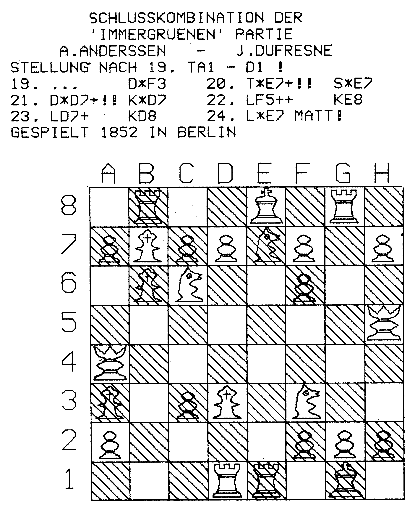
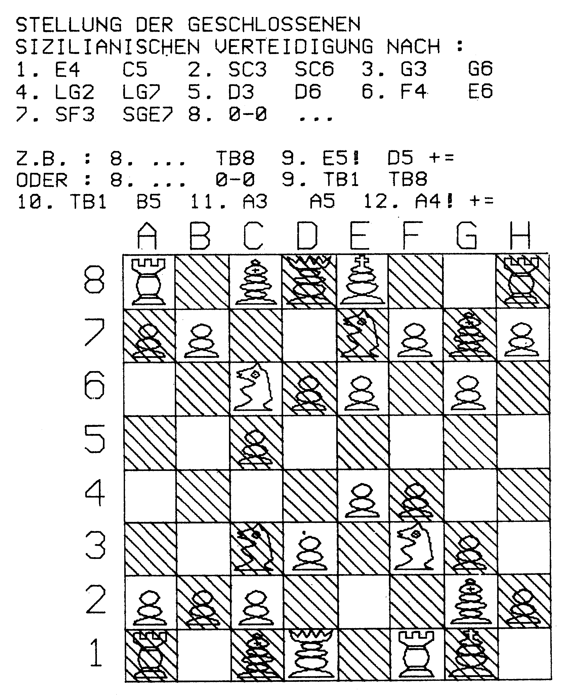

Schachdiagramme mit dem C 16
Plotten Sie Schachdiagramme auf dem VC 1520. Der schachbegeisterte Computer-Besitzer erhält damit die Möglichkeit, Eröffnungsvarianten karteikartenähnlich zu sammeln oder sich eine Gedankenstütze fürs Fernschach zu erstellen.
Wie man auf den beiden Diagrammen leicht erkennen kann, sind sie mit zwei verschiedenen Figurensätzen erstellt worden. Eine einzelne Figur besteht aus zirka 45 Linien. Ein Figurensatz besteht also aus etwa 5480 (45 x 2 x 6) Daten. Da diese beiden Figurensätze eine reine DATA-Wüste im Listing verursachen würden und das Aussehen der Figuren ohnehin Geschmackssache ist, sind sie im Listing nicht zu finden. Sie sind mit dem »SATZERSTELLER« (Listing 2) erstellt worden. Mit Hilfe der Satzerstellers lassen sich Figurensätze in etwa 20 Minuten erstellen. Der Satzersteller bietet folgende Möglichkeiten:


— Mit Hilfe des Joysticks die Figur bequem und bildgetreu zu erstellen
— Ein Minicursor und eine Koordinatenanzeige geben die Cursorposition an
— Alle Punktkoordinaten werden auf dem Bildschirm ausgegeben
— auf dem Bildschirm wird jeder Schritt wie auf dem Plotter nachvollzogen
— Die Figur wird auf dem Plotter gezeichnet
— Editiermöglichkeiten: (Joystick in Port 1)
— Punkt setzen: FEUER
— Punkt löschen: UNTEN + FEUER
— Figur spiegeln: OBEN + FEUER
— Neuer Anfangspunkt: RECHTS + FEUER, dann Punkt setzen
— Figur plotten: Taste <P>
Diagramme wie gemalt
Bei der Figurenerstellung kann man folgendermaßen vorgehen:
1. Schritt (nur für Diskettenlaufwerk): ein sequentielles File eröffnen: OPEN2,8,2,"FILENAME,S,W":CLOSE2
In Zeile 480: 480 OPEN2,8,2,"FILENAME,S,A" entsprechend den Filenamen einsetzen
1a) für Datasette: Zeile 480 in OPEN2,1,1 "FIGUREN" ändern
2. Die Figuren müssen in folgender Reihenfolge erstellt werden: Bauer – Springer – Läufer – Turm – Dame – König
3. Es ist günstig, für alle Figuren die gleiche Starthöhe (in den Diagrammen 44) zu benutzen.
4. Die Figur darf aus 56 Punkten bestehen. (Mit Rücksicht auf 2048 Byte freien Speicher konnten die Arrays in Zeile 10 nicht größer gewählt werden.)
5. Nach Druck der Taste <P> erscheint nach dem Plotten die Frage "DISK?" Bei Eingabe von <J> werden die Figurdaten an das Diskfile angehängt (Datasette: Daten als neues File). Bei <N> wird die Figur nicht gespeichert. Dann erscheint: ZURÜCK/NEU/ENDE. Bei <Z> geht man ins Bild mit der gerade erstellten Figur zurück. <N>: Neustart, sonst Programmende.
Als Beispiel die Erstellung von »Satz 2«:
Eine wichtige Hilfe zur Figurenerstellung ist die SPIEGELFUNKTION. Nach Wählen dieser wird an einer senkrechten gedachten Linie durch den letzten Punkt die Figur auf die andere Seite gespiegelt. Außerdem wird der letzte Punkt mit dem ersten verbunden. Normalerweise werden die Punkte vom Programm direkt verbunden, also wird die Figur ohne Absetzen gezeichnet. In manchen Fällen erscheint dies aber nicht sinnvoll, zum Beispiel beim Auge des Springers oder den waagerechten Turmverstrebungen. Dabei bedient man sich der Technik des »NEUEN ANFANGSPUNKT SETZEN«, das Programm reagiert nach Joystick rechts + Feuer mit einem Ton und Punktkoordinaten 99,99. Nun kann der neue Anfangspunkt angefahren werden.
Bei über 40 Punkten werden die folgenden wieder rechts oben angezeigt.
Diagrammdrucker (Listing 1): Nach Starten dieses Programmes muß zuerst die Stellung auf die übliche Art (König: C1 und so weiter) eingegeben werden. Dies geschieht durch eine mit GET für diese Anwendung geschriebene Eingaberoutine. Eine Eingabe schließt mit mit <RETURN> ab. Gelöscht werden kann mit <DEL>. Durch <-> erkennt das Programm, daß von der einzugebenden Figur alle eingegeben worden sind.
Auch für Kassette
Nach Eingabe der Position kann man wählen, ob man sein Diagramm mit Text drucken will. Weiterhin kann man entscheiden, ob ein Standardmuster (Turnier, etc.), das für Turnierschach besonders geeignet ist, gewählt werden soll. Der Text kann nun frei auf dem Bildschirm (bis zum Balken) eingegeben werden und wird mit <RETURN> abgeschlossen. Nach dem Drucken erscheint eine Auswahl der erstellten Figurensätze, deren Namen ab Zeile 2000 eingegeben werden müssen und mit <E> abgeschlossen werden sollten. Nach dem Laden der Daten wird das Diagramm gedruckt.
Kassettenhilfe: Das Programm ist eigentlich für das Diskettenlaufwerk erdacht, doch mit folgender Methode läßt sich ein geeignetes File auf Datasette erzeugen:
- Für jede Figur ein File »Figuren« erstellen.
- Diese sechs Files zu einem zusammenfassen. Diese Aufgabe könnte Listing 3 »Tape-Hilfe« übernehmen.
Anpassung an den C 64: Der Satzersteller könnte mit einer Basic-Erweiterung die Befehle für hochauflösende Grafik (zum Beispiel Simons Basic) leicht umgeschrieben und dabei dank des größeren Speicherplatzes komfortabler gestaltet werden. Der Diagrammdrucker läßt sich leicht im C 64-Basic für den C 64 umschreiben. Lediglich einige GETKEY, IF THEN ELSE und ein RESTORE X müßten umgeformt werden. DO LOOP oder andere Basic-3.5-Konstruktionen sind in keinem Programm benutzt worden. Etwas unübersichtlichere FOR-NEXT- und IF-THEN-Konstruktionen sind zur besseren Anpassung an den C 64/VC 20 verwendet worden.
(M. Wesner/og)